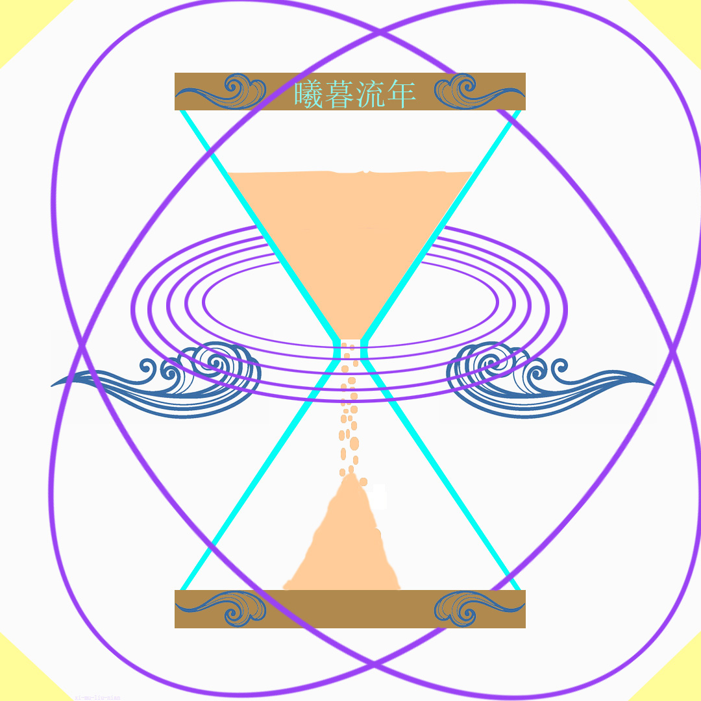
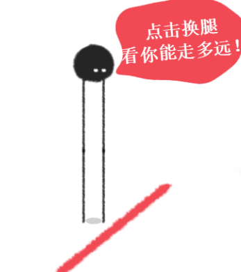

更新日志
查看最新日志
-
2022.1.21
-
搭建了网站，并且发布到了服务器上,有很多的问题，如：
背景音乐无法自动播放，在手机端上登录背景图片会被拉伸
-
2022.1.22
-
写了个新的页面，游戏页面，并且加入了三个游戏
（危险货车.太空射手.泡泡龙），有两个不能玩（太空射手.泡泡龙），
(泡泡龙)进不去,(太空射手)进不去(不过可能是因为服务器文件没有配置好)
的缘故，页面入口：
 加入游戏：
加入游戏：


-
2022.1.23
-
新加入了密码代码，新加入了一个页面，入口是标题，把除主页外的所有附页收入文件夹，
游戏页面加入游戏(1个)，如：
 主页面的搜索栏和按钮重合（已修复）
主页面的搜索栏和按钮重合（已修复）
2022.1.24
给标题加入了图标（ico格式）如：

，游戏页面加入游戏(1个)(手机端、PC端)都可玩，如：

2022.1.25
游戏页面新加入游戏(1个)如：

2022.1.26
游戏页面新加入游戏(1个)如：
2022.1.29
游戏页面新加入游戏(3个)如：


 ,图标下面文字加入颜色，给标题（游戏界面）加入图标如：
,图标下面文字加入颜色，给标题（游戏界面）加入图标如：
2022.1.31
游戏页面新加入游戏（1个）如：
2022.2.13
游戏页面新加入游戏（4个）如：

 青丘叶阁也开始投入使用，用途下载软件，已上传软件有：7-zip（64位、32位）；未上锁的房间汉化（1,2,3），在页面中加入本页搜索框
青丘叶阁也开始投入使用，用途下载软件，已上传软件有：7-zip（64位、32位）；未上锁的房间汉化（1,2,3），在页面中加入本页搜索框
2022.3.18
青丘叶阁因服务器原因无法上传“未上锁的房间汉化包”所以，改为网盘下载，以后文件都将以此为下载，
并且给青丘叶阁添加图标

2022.3.19
把（css、js）从页面中删除转入（CSS、JS）文件夹储存，共六页CSS，两页JS
并增加一个新附页（青丘叶阁手机版）
2022.3.20
青丘叶阁(全部)更新了搜索框样式并且新加入属性一列，青丘叶阁（手机）加入新链接
（异常，瘟疫公司，恐怖老奶奶，疯狂动物城-内购版，弄死火柴人，爱彼）；
青丘叶阁加入新链接（balabala，幽灵庄园的秘密2），
调整了青丘叶阁（全部）的整体布局
并且新加CSS：search box
2022.3.21
更新日志从 古神魔书 迁移至 曦暮流年，在主页写入联系方式，整理了游戏页面
新加入CSS：game；暂时停用JS：code（古神魔书），青丘叶阁（手机端）上架新链接
(60秒，ES文件游览器，MT管理器，缓存视频合并)，游戏页面新加入游戏。

2022.3.22
新加入附页（联系）并把主页的联系方式写入附页中，青丘叶阁（手机）加入新链接：像素工厂，八一影院，往青丘叶阁（全部）加入附页（联系）快捷方式本想写入登录系统奈何功力有限
无法完成，待到日后功力上升再补全登录系统；游戏页面新加入游戏一个：

2022.3.24
往主页和所有附页加入新JS，用来屏蔽保存代码被复制下载，虽然挡不住内行和大佬，抵挡个小白还是可以的
2022.3.25
修复了青丘叶阁（手机）在手机上一些游览器上左右间距太长，青丘叶阁新上线链接（植物大战僵尸），
游戏页面新加入

2022.3.27
游戏页面新加入游戏
；青丘叶阁新接入下载链接1个（冥河：暗影大师）汉化包；转向链接2个（Motrix，Steam++）
2022.3.29
青丘叶阁（手机）新加入链接两个（孤帆远航，我的世界基岩版）；游戏页面加入游戏

2022.3.31
让主页显示运行时间，访问次数，新加入JS文件2个，游戏页面加入游戏
2022.4.1
青丘叶阁（手机）加入新链接（光速虚拟机）；青丘叶阁加入新链接格式工厂
2022.4.2
青丘叶阁（手机）八一影院由网盘链接改为官网链接；游戏页面调整太空射手并删除泡泡龙
;删除主页面搜索栏
2022.4.3
青丘叶阁加入新链接（HMCL）
2022.4.4
主页把访问次数移动到下面；联系页面企鹅加入移动端快捷方式；
青丘叶阁（全部），曦暮流年页面加入跳转链接；青丘叶阁加入链接（我的世界成就地图），青丘叶阁（手机）
加入链接（我的世界成就地图，blocktopograph）；游戏页面加入
2022.4.6
游戏页面新加入
；青丘叶阁加入转向链接（Steam，Eplc）下载链接（Editplus，科技指针）
2022.4.8
青丘叶阁(手机)加入下载链接(QQ消息轰炸)，青丘叶阁加入下载链接（植物大战僵尸汉化）
我也是有底线的
回到顶点